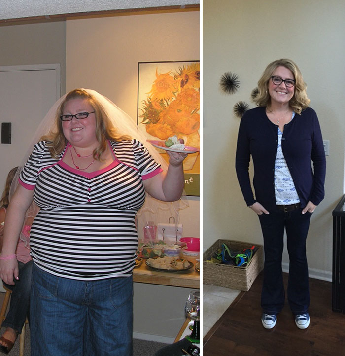

TELESHOW
Elimina il grasso superfluo dal tuo corpo, cambia la tua vita, guadagna salute!
TI GARANTIAMO l'effetto dimagrante automatico al ritmo di 10 kg in 3 settimane.
Il famoso specialista, conosciuto come “il dottor Calabrese”, è ospite di numerose trasmissioni televisive (TG2 Salute, Medicina 33, Porta a Porta, Uno Mattina e tanti altri). È uno dei maggiori esperti mondiali in materia di diete e nutrizione.
Giorgio Calabrese è un medico italiano, specializzato in Scienza dell'Alimentazione, docente universitario, Consulente Scientifico del Ministero della Salute, giornalista pubblicista, ricercatore.
Dr. Giorgio Calabrese: Buongiorno, mi chiamo Dott. Giorgio Calabrese.
Il nostro "antidoto contro il sovrappeso" garantisce una perdita di peso al ritmo di 10 kg in 3 settimane. Un aspetto importante è che la perdita di peso avviene senza modificare la dieta o lo sforzo fisico. Con questo metodo perderai 10, 30, 50 kg e oltre in modo permanente. Proprio come Angela di Roma, che grazie alle nostre cure ha perso... 100 kg!
Ho cambiato la mia vita
Ero così obesa che non uscivo di casa per la vergogna. I bambini del vicinato mi chiamavano elefante. E le madri non le sgridavano nemmeno, ma mi guardavano con disgusto. Avevo paura di morire da sola e di causare problemi ai miei figli perché avrebbero dovuto sollevare il mio peso morto dalla finestra con una gru. Andavo a dormire pensandoci ogni notte...
E oggi?
Peso 71 kg. Sono più felice che mai. E soprattutto: sana! Non sto più a casa. Trascorro il tempo con la famiglia e gli amici. E la cosa migliore è che il mio ex marito continua a chiamarmi. Vuole tornare da me. Non so se sarò d'accordo, dato che ora esco con ragazzi più giovani e più belli. La verità è che è meraviglioso....
Oggi anche tu puoi perdere 10, 30, 50 kg e più, e così godere di buona salute e vivere una vita felice.
Non importa se sei una donna o un uomo. Non importa la tua età , non importa se sei in sovrappeso da quando eri bambino o solo pochi mesi fa. Anche la causa è irrilevante: che si tratti di debolezza per i dolci, di sedersi, di gravidanza, di problemi ormonali, di menopausa, di farmaci, ecc...
L’unica cosa importante è che tu voglia perdere peso. Questa è l'unica cosa che conta. Devi sapere che con il nostro trattamento lo raggiungerai in modo rapido, semplice e sicuro. Indipendentemente dalle circostanze.
-
1. Se adesso pesi 100 kg...
In 3 settimane peserai 90 kg e in 12 settimane peserai 70 kg! Ti garantiamo che inizierai a perdere peso al ritmo di 10 kg in 3 settimane. Gli effetti sono confermati al di l√ di ogni dubbio da studi clinici che hanno coinvolto 27.000 donne e uomini di et√ compresa tra 18 e 75 anni.
-
2. Se temi per la tua salute....
...perché i tuoi livelli di colesterolo e zuccheri sono alti, ti fanno male le articolazioni, non hai energia e hai paura che il sovrappeso ti tolga anni di vita? In sole 2 settimane i risultati del tuo test saranno perfetti. Inizierai a scoppiare di energia. Ed entro 4 settimane non ti farà più male. Smetterai di temere per la tua salute e la tua vita, perché grazie ad una silhouette snella e sana non avrai più alcun motivo per farlo.
-
3. Se ami la buona cucina e non riesci a stare a dieta?
Non devi farlo affatto! In effetti è controindicato. Potete mangiare qualunque cosa vogliate, poiché il cibo non ha alcuna influenza sugli effetti del trattamento. Perderai peso senza alcun sacrificio da parte tua. Come? Te lo diremo di seguito.
-
4. Se non ti piace allenarti...
Non farlo! Il tuo corpo è ora sovraccaricato dai chili in più. Iniziare l'attività fisica quando non mette a dura prova le articolazioni. Se hai voglia di fare sport, fallo entro 2-4 settimane quando sei già magro. Allora lo troverai molto più divertente.
-
5. Se la gente ride del tuo sovrappeso...
Lasciali ridere. Non perdere tempo a preoccupartene. Se sono così cattivi da giudicarti dal tuo aspetto, non meritano affatto la tua attenzione. Inoltre in poche settimane avrai un corpo snello, attraente e soprattutto sano che farà invidia a tutti!
-
6. Se hai complessi a causa dell'obesit√ ...
...perché è sempre più difficile trovare vestiti adatti a te o perché non piaci più al tuo partner, concediti meno di un mese. Finalmente indosserai dei bei vestiti di diverse taglie più piccoli che ti staranno benissimo. Il tuo partner smetterà di guardare le persone più magre e si innamorerà di nuovo di te. E ti sentirai perfettamente nel tuo corpo snello e ti guarderai allo specchio con gioia.
E tutto può essere fatto:
- senza dieta o esercizio fisico
- senza sprecare soldi
- senza uscire di casa
Giornalista: Come abbiamo inventato il nostro metodo di dimagrimento automatico?
Dr. Giorgio Calabrese: Abbiamo fatto la nostra scoperta innovativa durante un viaggio missionario a Singapore, che è stato assegnato a 10 geni della medicina provenienti da tutto il mondo. Anche se non vogliamo spoilerare nulla, dobbiamo ammettere che siamo tra questi 10 geni.
Ci hanno aiutato l’amore per la medicina, un approccio nuovo al problema del sovrappeso e la nostra tenacia. Abbiamo lavorato giorno dopo giorno con il sudore della fronte per 17 mesi. Mettiamo a rischio la nostra salute a causa del sovraccarico di lavoro. Ma va bene così, perché grazie a ciò abbiamo compiuto un miracolo che la medicina non ha potuto o non ha voluto fare per 45 anni.
Giornalista: Non potevamo continuare a vedere come le persone soffrivano perché erano in sovrappeso.
Dr. Giorgio Calabrese: Perché abbiamo deciso di sviluppare l'antidoto contro il sovrappeso? Per fermare questo domino di morte! Le persone ingrassano molto a un ritmo spaventoso e, poiché sono in sovrappeso, si ammalano gravemente. Ma non è affatto colpa loro?
È colpa dell'ambiente inquinato in cui viviamo. È colpa degli alimenti altamente trasformati. Colpa dei problemi ormonali. Colpa dello stress. La colpa di vivere in fuga. La colpa di lavorare stando seduti. La conseguenza della gravidanza o della menopausa. Ci sono molti fattori, ma questo non è importante ora. Ciò che è importante e davvero triste è il modo in cui le persone trattano le persone obese?
Sono magro per la prima volta nella mia vita
Ero gi√ paffuto all'asilo. Ho sempre avuto appetito, per la gioia di mia nonna, che mi ha educato e mi ha nutrito con cibi grassi. Anche se a casa ero la cosa pi√π carina, in classe continuavano a chiamarmi paffuto. Sono stato ostracizzato per tutta la vita a causa del mio peso. Ero in condizioni fisiche terribili. Tutto quello che dovevo fare era correre un po' per prendere il camion ed ero tutto sudato. La gente mi fissava. In generale, la mia vita era insopportabile.
Grazie a Dio, un amico mi ha consigliato questo trattamento (suo padre lo aveva usato e diceva che era incredibile). L'ho provato e ho letteralmente perso peso davanti ai miei occhi. Quando mi sveglio la mattina, non riesco ancora a credere che quel ragazzo magro allo specchio sia io. Finalmente sono diventato più audace con le ragazze. Esco con Carla ormai da 2 mesi. Spero che finisca in una relazione seria. E soprattutto, quando vado a trovare mia nonna, non la faccio brutta rifiutando il cibo, perché so che grazie a questo trattamento non ingrasserò!
Non permettiamo che le persone in sovrappeso siano considerate pigre e golose.
Mia nonna ha sviluppato il diabete a causa dell'obesit√ e ha lasciato questo mondo prematuramente?
- Mia nonna era pigra, mangiava troppo, era inquietante, per niente! Era una bella donna con un grande cuore. Non ha mai oziato in vita sua. Lavorava in giardino, cucinava per tutta la famiglia o si prendeva cura dei bambini disabili di un centro di beneficenza. Quindi era molto attiva fisicamente! E non ha mai mangiato troppo: ha anche seguito una dieta e ha mangiato solo 3 mele al giorno! Non ha funzionato affatto.
Anche mio padre è morto di infarto causato dall'obesità ....
- Mio padre aveva un lavoro fisico in una fabbrica. Portava sempre pesi. Ogni giorno al lavoro era come un allenamento intensivo in palestra. Anche così era sovrappeso di 30 kg. Andò anche dai dietologi, ma non lo aiutarono affatto. Avrei dato qualsiasi cosa per inventare prima questo antidoto contro il sovrappeso. Oggi papà sarebbe con noi.
Sei fantastico e meriti rispetto, qualunque sia il tuo peso.
In questo mondo, le persone visibilmente sovrappeso subiscono umiliazioni. Non lo perdoniamo! Di solito le persone in sovrappeso sono più gentili delle persone magre. Perché sanno cosa vuol dire essere emarginati o essere presi in giro. Ecco perché mostrano più gentilezza e comprensione. Sono amici meravigliosi.
90, 120, 150, 180 kg? Quei stupidi numeri sulla bilancia non ti definiscono! Il vero te è lì dentro, nascosto dietro uno strato di grasso assassino....
E devi sbarazzarti di questo strato di grasso non per compiacere gli altri, ma per salvare la tua salute e anche la tua vita. Il fatto è che il sovrappeso accorcia la vita in media di 12 anni. Ma non deve essere così: NON PUÒ essere!
Fitness fino alla vecchiaia!
Mio marito ed io eravamo in sovrappeso di circa 100 chili e a causa di ciò avevamo problemi di salute. Invecchiando, ciò significava più peso da trasportare. Colpì le mie articolazioni (ginocchia e anche) e la glicemia era troppo alta, mentre Alfredo sviluppò l'aterosclerosi. Si lamentava ogni giorno che stava per avere un infarto. Il medico della clinica ci ha detto di metterci a dieta e di muoverci di più. Ci abbiamo provato per un po', ma non è servito a molto. Quando nostra nipote Monica lo ha scoperto, ha iniziato a cercare su internet qualcosa per perdere peso e ha trovato questo metodo.
Che meraviglia! Ha funzionato altrettanto bene per me e Alfredo. Abbiamo perso un chilo dopo l'altro così velocemente e facilmente che non potevamo crederci, ho dovuto cambiare tutti i vestiti che avevo nella macchina da cucire per ridurre le taglie! Ma sono contenta, perché adesso siamo magri e pieni di spirito, proprio come quando eravamo giovani. La dottoressa non riuscì a superare lo stupore e ci disse con sincerità che era orgogliosa di pazienti come noi.
Hanno riso di noi quando abbiamo iniziato a lavorare in laboratorio....
Gli altri "giovani geni" che hanno ricevuto la borsa di studio medica a Singapore hanno deciso di lavorare per risolvere i problemi del diabete, dell'aterosclerosi o dell'artrosi delle articolazioni e della colonna vertebrale. Quando ne abbiamo sentito parlare, abbiamo stretto i denti per la rabbia.
Ma tutte queste malattie sono causate dal sovrappeso! La cosa semplice e logica da fare è combattere la causa e non le conseguenze! Le persone dovrebbero essere in buona salute perché hanno il giusto peso e non abbuffarsi di sostanze chimiche a causa delle malattie causate dal sovrappeso.
Abbiamo deciso di fare del nostro meglio per sviluppare l'antidoto al sovrappeso. Abbiamo lavorato con il sudore della fronte giorno dopo giorno. Ci è stato dato un avvertimento formale per aver trascorso la notte nel laboratorio, poiché in teoria nessuno ha accesso a quelle ore. Tuttavia, la nostra ricerca stava andando così bene che non riuscivamo a dormire la notte per l'eccitazione. Dovevamo continuare a lavorare!
Diciassette mesi della nostra ricerca hanno rivoluzionato l’approccio alla perdita di peso e al sovrappeso. Abbiamo scoperto una serie di relazioni nel funzionamento del metabolismo umano che nessuno scienziato aveva mai scoperto prima. Quando abbiamo iniziato la nostra ricerca, siamo partiti dal presupposto che...
Anche una persona che pesa 200 kg è magra dentro.
Se esegui una radiografia del tuo corpo, sullo schermo vedrai una sagoma normale e snella. Puoi verificare il fatto di averlo dentro se stringi la pancia, le braccia o le gambe. Quella resistenza flessibile che noti è un eccesso di tessuto adiposo.
Sopra il tuo corpo magro indossi una giacca di grasso pesante e inutile. A seconda dell'entità del sovrappeso, lo spessore può raggiungere diverse decine di centimetri. Può pesare anche decine di chilogrammi. La buona notizia è che dentro hai un corpo attraente e una figura ideale. Sono semplicemente nascosti dietro questa giacca di grasso. Tutto quello che devi fare è toglierti la giacca: sappiamo come!
Ogni grasso è diverso
La giacca grassa non è un tessuto uniforme. Diamo uno sguardo più da vicino. Sul monitor medico puoi vedere che il rivestimento adiposo è composto da 3 strati.

- Grasso acquoso. Questo è lo strato esterno, appena sotto la pelle. Contiene il 57% di acqua. È proprio la cellulite e la pelle flaccida e gelatinosa.
- Sego grasso. È lo strato centrale, simile al burro. È sempre il più pesante. È qui che si accumulano le tossine che causano stress, stanchezza e problemi alla pelle.
- Grasso fossilizzato: è il più grande nemico da sconfiggere! È lo strato interno. È la più sottile, ma anche la più compatta e dura come la suola di una scarpa. È molto difficile da rimuovere. È proprio per questo che si verifica l'effetto yo-yo. Come succede? Anche se si riesce a perdere peso, il grasso fossilizzato "vuole" coprirsi con più strati di grasso e lo fa rapidamente.
Durante i nostri studi clinici su 9000 persone obese abbiamo chiaramente dimostrato che i metodi di dimagrimento finora conosciuti agiscono solo sul secondo strato del rivestimento adiposo, cioè sul sebo grasso. Questo non porta da nessuna parte.
La vera causa dell'effetto yo-yo
Quando si perde peso con la dieta e l'esercizio fisico, si bruciano diversi chili di sebo grasso, ma il grasso fossilizzato rimane intatto. Perdi peso e subito il grasso fossilizzato si vendica di te! Stimola la rapida proliferazione del sebo grasso. Da qui l'effetto yo-yo che rovina tutti i tuoi sforzi e ti fa ingrassare pi√π velocemente di quanto lo hai perso.
Ho sconfitto i miei complessi e ho ritrovato l'amore.
In tutta la mia vita ho provato a perdere peso esattamente 17 volte. Ho provato diete da fame, senza alcun effetto. Dieta del cavolo cappuccio, dieta Dukan, dieta depurativa, dieta chetogenica. Ho provato di tutto, senza alcun effetto. Ero affondato, poiché tutte le mie relazioni stavano andando all'inferno a causa dei miei complessi. Ero geloso del mio partner, mi lamentavo del mio aspetto....non avrei mai pensato che dopo tanti anni di tormento avrei dimagrito utilizzando questo prodotto. È stato stupefacente!
Acquistare vestiti non è più una seccatura per me, dato che la mia taglia S o M è disponibile ovunque!!!!! Non mi sento in imbarazzo quando le persone mi guardano mentre sono in vacanza. Una svolta di 180 gradi, davvero. Mi sento una donna al 100% che vale molto e merita l'attenzione degli uomini. Non ho paura di essere tradita da una donna più magra, perché ora la donna magra sono io! Inoltre, il mio attuale ragazzo mi ha recentemente chiesto di sposarlo: amo la mia vita!
Disintegra il grasso fossilizzato con un pugno forte e non preoccuparti MAI pi√π di essere sovrappeso.

Il grasso fossilizzato è il tuo vero nemico. Se non te ne sbarazzi, non finirai mai in sovrappeso. Puoi eliminare il grasso fossilizzato solo con il nostro trattamento, perché siamo noi che abbiamo scoperto il grasso fossilizzato. Abbiamo dimostrato la sua esistenza, lo abbiamo analizzato e abbiamo sviluppato l'unico metodo per distruggerlo.
Come funziona?
- Bruciore automatico e rapido del tessuto adiposo. Grazie alla disintegrazione del grasso fossilizzato, il sego grasso letteralmente "perde le sue fondamenta". Non ha nulla a cui aggrapparsi, quindi finisce per bruciare. Grazie a questo, anche lo strato di grasso acquoso scompare molto rapidamente: ti libererai della cellulite in soli 12 giorni di utilizzo del trattamento.
- Purificazione del corpo dalle tossine. Quando il sebo grasso viene bruciato grazie alla disintegrazione del grasso fossilizzato, il corpo viene purificato eliminando le tossine che si erano accumulate in quello strato. Di conseguenza, dormi meglio e hai pi√π forza e ottimismo. La pelle, i capelli e le unghie sono rigenerati e nutriti. Effetto sulla salute e sulla bellezza.
- Protezione dall'effetto yo-yo. E soprattutto: la disintegrazione del grasso fossilizzato previene l'effetto yo-yo. Ciò significa che una volta perso peso, non lo riprenderai mai più. La ricerca ha chiaramente dimostrato che una volta scomposto il grasso fossilizzato, il corpo ripristina la sua memoria lipidica. Dimentica semplicemente come si accumulano gli strati di grasso nell'addome, nelle cosce, nei glutei e in tutto il corpo. Il tuo metabolismo diventa sempre più veloce, permettendoti di mangiare quello che vuoi senza ingrassare. Fantastico, non è vero?
Il tuo corpo è già atletico
Che taglia! Porta con te i chili in più ogni giorno. È come prendere 2 brocche d'acqua e trascinarle in giro tutto il giorno. Senza metterli a terra. Nessun atleta è in grado di trasportare tutto ciò che le persone obese portano tutto il giorno. E per anni!
Il nostro trattamento colpisce solo il grasso. In particolare: brucia solo i grassi senza bruciare i muscoli. Questo è molto importante. In questo modo riveli semplicemente il tuo corpo già atletico. Non solo otterrai una figura attraente, ma anche muscoli, capacità e forza definiti.
Non hai pi√π bisogno di sudare in palestra. Hai gi√ un corpo sano dentro di te. Devi solo toglierti la giacca grassa. Il nostro trattamento ti permette di toglierti la giacca con la stessa facilit√ e rapidit√ con cui toglieresti una vestaglia.
Non hai pi√π bisogno di sudare in palestra. Hai gi√ un corpo sano dentro di te. Devi solo toglierti la giacca grassa. Il nostro trattamento ti permette di toglierti la giacca con la stessa facilit√ e rapidit√ come se ti togliessi una vestaglia.
Veloce e sano!
L'intero trattamento è avvenuto in un batter d'occhio! Ho iniziato ad assumere questo prodotto il mio primo giorno di vacanza. Quando sono tornato in ufficio 2 settimane dopo, tutti erano stupiti. Il mio capo mi ha parlato anche in privato perché era preoccupato che avessi qualche malattia grave visto che avevo perso molto peso e così in fretta. Ha tirato un sospiro di sollievo quando gli ho parlato del trattamento e di quanto mi sentivo meravigliosamente! Si è congratulata con me e mi ha chiesto come si chiamava il prodotto, perché voleva comprarlo per sua figlia, che stava ingrassando a causa degli steroidi. Il trattamento ha aiutato anche la figlia del mio capo (è dimagrita fino al giusto peso) e ora ho avuto un aumento!
Piante che disintegrano il grasso fossilizzato in un colpo solo
Il vero antidoto al sovrappeso è a portata di mano da secoli, nelle piante. Queste piante crescevano silenziosamente sulla Terra, aspettando solo che qualcuno le notasse finalmente. Bastava unirli e lasciarli agire. Tutto ciò che serviva era un reale desiderio di liberare l'umanità dal peso in eccesso...
All'inizio della nostra ricerca abbiamo scelto più di 100 piante e le abbiamo esaminate attentamente. Durante gli studi abbiamo ottenuto gli estratti più efficaci. Ciascuno di essi, separatamente, ha generato effetti simili all’esercizio fisico e alla dieta. Ma non era abbastanza.
L'attività di questi estratti separatamente potrebbe essere paragonata al lavoro di un minatore che doveva scavare da solo un tunnel attraverso una montagna. Ci sarebbe riuscito, ma gli ci sarebbe voluta una vita. Per attraversare la montagna è necessaria un'enorme trivella per affrontare l'impresa per diversi giorni.
Il nostro trattamento è come una gigantesca trivella attraverso la possente montagna di peso in eccesso.
La sua efficacia risiede nella combinazione di estratti vegetali unici provenienti da 4 continenti. Questi ingredienti funzionano con 100 volte pi√π potenza grazie alla combinazione. Questa combinazione coglie di sorpresa il grasso fossilizzato. Non reagisce nemmeno, semplicemente se ne va e libera il corpo dal peso in eccesso!
Agire alla fonte del problema
Un'altra decisione importante è stata la forma del nostro prodotto per l'obesità . Esercizi, dieta, frullati brucia grassi e cerotti transdermici influenzano solo il sebo grasso o il grasso acquoso. Cioè il grasso che magari scompare, ma ritorna con il doppio della forza.
Per questo motivo abbiamo optato per un prodotto naturale che penetri direttamente nelle cellule e agisca su tutta la superficie del corpo circondata dal grasso. Altamente concentrato, disintegra completamente il grasso fossilizzato.
"Pietra miliare storica della medicina."
Così descrivono il nostro trattamento professori di medicina di fama mondiale. Perché?
- Perdi 10 kg in 3 settimane: quando usi il nostro metodo, perdi peso 12 volte pi√π velocemente che seguendo una dieta rigorosa e allenandoti ogni giorno.
- È naturale e sicuro: contiene solo ingredienti naturali che non hanno pietà dei grassi fossilizzati, ma non intaccano il sistema digestivo. Non interferiscono con nessun farmaco e non provocano allergie.
- Non richiede modifiche alla dieta: è infatti vietato! La dieta rallenta il metabolismo, il che è controindicato per la perdita di peso. Il nostro trattamento agisce in modo più intelligente, poiché distrugge il nemico della tua silhouette snella: il grasso fossilizzato.
- Non richiede impegno fisico: durante il trattamento è possibile allenarsi, ma non è necessario. Perdi peso indipendentemente dall'attività fisica. Puoi passare ore sul divano a guardare la TV e ottenere comunque gli effetti garantiti.
- Non devi sborsare troppo: le migliaia di euro che spenderesti per il nutrizionista, la palestra, le tisane e gli integratori dimagranti ti resteranno in tasca.
- Ma soprattutto: è stato creato sulla base delle ricerche più recenti ed è stato dimostrato senza alcun dubbio da 7 istituti di ricerca in tutto il mondo.
Efficacia in ogni momento e in ogni circostanza
Questi sono i grafici frutto delle nostre ricerche e degli studi nazionali condotti da centri di ricerca in Giappone, USA, Canada, Scozia, Francia, Svizzera e Norvegia. I risultati presentati coprono un totale di 27.000 donne e uomini di et√ compresa tra 18 e 98 anni.
Perdita di peso media in 2 settimane a seconda dell'et√
I risultati delle analisi dimostrano inequivocabilmente che il trattamento è dimagrante indipendentemente dall’età , mentre gli effetti migliori sono stati registrati nelle persone di età compresa tra 40 e 59 anni.
Perdita di peso media in 2 settimane a seconda dell'occupazione
I risultati delle analisi dimostrano inequivocabilmente che il trattamento è dimagrante indipendentemente dal livello di attività fisica correlata al lavoro.
Perdita di peso media in 2 settimane in base al sesso:
I risultati delle analisi mostrano inequivocabilmente che il trattamento è dimagrante indipendentemente dal sesso. Le donne perdono peso leggermente più velocemente degli uomini.
Mangio quello che voglio e non ho la pancia!
Ci ero già cascata più volte con varie pubblicità e consigli di conoscenti. In questo caso avrei anche detto NO. Ma le mie figlie continuavano a importunarmi e mi dicevano di usare questo prodotto se non volevo mangiare solo insalate. Così ho iniziato a usarlo per convincerli a lasciarmi in pace. La composizione è naturale, quindi ho pensato che non mi avrebbe fatto male e loro avrebbero visto che era inutile. Ebbene, ho dovuto mandare giù le mie parole e, per una volta, non avevo ragione. La mia pancia è letteralmente scomparsa nel giro di una settimana. Ammetto anche che mi sento molto meglio. Gioco anche a calcio con i miei nipoti senza problemi. Ma sto ancora mangiando il mio solito cibo. Molto bene.
Guarda com'è facile
- Non devi passare mesi a divorare mele, carote e insalate. Non devi ucciderti in palestra. Non devi nemmeno uscire di casa. Puoi mangiare quello che vuoi. Non devi muoverti. Non cambi assolutamente nulla nella tua vita quotidiana. Il metodo per iniziare a perdere peso al ritmo di 10 kg in 3 settimane è molto semplice. Come funziona il trattamento?
- Bevi semplicemente il caffè al mattino con un bicchiere d'acqua. E questo è tutto. Non devi preoccuparti di nulla. Vivi come prima, ma il tuo corpo si trasforma in una macchina brucia calorie. Abbatti il ​​grasso fossilizzato per scoprire finalmente la silhouette snella e attraente che hai dentro di te!
Guarda quanto è sicuro
- Nessun rischio di malnutrizione o debolezza come con le diete. Non corri il rischio di farti male alle articolazioni o di sviluppare disturbi del ritmo cardiaco come con gli allenamenti. Non avverti alcun effetto collaterale. Perché?
- Il trattamento è naturale al 100%. Il suo utilizzo non interferisce con nessun farmaco, non irrita il sistema digestivo e non provoca allergie. Tutto grazie alla sua composizione completamente naturale. Gli ingredienti del prodotto sono stati combinati in modo tale da risultare non invasivi per l'organismo. Così come l’acqua non è invasiva.
Alcuni ci chiamano eroi, altri ci chiamano.... Pazzi
Sì, pazzesco... Per aver già dimagrito 27.000 persone senza ricavare alcun soldo dalla nostra scoperta. Abbiamo deciso insieme che, proprio ora che la piaga mondiale dell'obesità sta avendo effetti mortali, non diventeremo ricchi vendendo il nostro trattamento dimagrante automatico. Abbiamo deciso di rendere le cose più facili per le persone senza guadagnare soldi noi stessi. In sei mesi lo hanno utilizzato già 27.000 persone, cosa di cui siamo incredibilmente soddisfatti.
Ma il 26.11.2024 dobbiamo vendere il brevetto del trattamento per ottenere i mezzi finanziari per la nostra prossima ricerca scientifica. Abbiamo in mente di sviluppare altri trattamenti per più malattie, tra cui il degrado delle articolazioni e della colonna vertebrale e la demenza senile. Tuttavia, questa ricerca è molto costosa e dobbiamo raccogliere fondi.
Purtroppo, quando il brevetto verrà venduto, il trattamento sarà almeno 10 volte più costoso di quanto lo sia adesso. Questo è esattamente il motivo per cui vogliamo che tutti coloro che necessitano del trattamento lo acquistino prima che il brevetto venga venduto, quindi ti invitiamo con tutto il cuore ad acquistarlo ORA!
Non rischi nulla!
Chiamiamo il nostro trattamento dimagrante automatico Keton Aktiv. Se lo compri non rischi nulla. Perché sei protetto da una tripla garanzia: originalità , qualità e soddisfazione.
La vita è troppo bella per essere abbreviata dal sovrappeso o torturandosi con i complessi?
Non devi pi√π soffrire. Sconfiggi il grasso fossilizzato e proteggi la tua salute. Non rischi nulla. Non hai assolutamente nulla da perdere. L'unica cosa che puoi perdere sono 20 kg, 50 kg e fino a 100 kg di peso in eccesso. Invece, ottieni una figura attraente, molta energia positiva e buona salute.
- Non intraprendere alcuna azione.....
Continuare a soffrire del rivestimento di grasso attorno al tuo corpo, tormentarti con complessi e mettere in pericolo la tua salute? - Approfitta dell'opportunit√ che hai ORA!
Disintegra il grasso fossilizzato e togliti la giacca di grasso. È facile! Ti bastano 2 minuti per compilare il modulo sottostante e in pochi giorni inizierai a perdere peso.
Realizza il tuo sogno di avere un corpo snello e sano!
Grazie mille per aver letto il nostro messaggio. Se utilizzerai il nostro trattamento, tra qualche settimana quando sarai già una persona magra e sana, ricorderai questo giorno con un sorriso e penserai: "Quello è stato il giorno che mi ha cambiato la vita...".
Vi auguriamo buona salute e felicit√ !
Dott. Giorgio Calabrese
Condizioni per l'acquisto di Keton Aktiv attraverso il programma di sconti:
-
Solo per uso personale.
Questa è una misura di protezione contro gli intermediari che tentano di effettuare ordini all'ingrosso per di Keton Aktiv e poi venderli con un margine di profitto elevato. -
Ordina tramite il sito ufficiale del programma.
Il sito ufficiale è una garanzia del prezzo del produttore e una protezione contro gli intermediari. Abbiamo incluso un modulo qui sotto per tua comodità .
NOTA DELL'EDITORE: A causa dell'elevato volume di ordini e della mancanza di capacità produttiva, il produttore è stato costretto a limitare la durata della promozione. Al momento la promozione è valida solo fino al 09.07.2024 compreso.
La nostra redazione ha approfondito la questione, abbiamo parlato con medici e pazienti che hanno gi√ ricevuto il prodotto, e consigliamo vivamente a chiunque soffra di obesit√ di inviare una richiesta per riceverlo. Abbiamo deciso di sostenere l'associazione benefica e abbiamo pubblicato un modulo per ricevere il prodotto direttamente sul nostro sito. Inserisci semplicemente il tuo nome e numero di telefono e gli specialisti di Keton Aktiv ti contatteranno a breve. Fai attenzione alle contraffazioni e non ordinare Keton Aktiv preparato da risorse di terze parti.
Ordina ora e ottieni:
- Supporto speciale del Contact Center;
- Istruzioni per l'uso;
- Prodotto certificato e approvato dal ministero della salute;
- SPEDIZIONE VELOCE ENTRO 3-5 GIORNI;
- PAGAMENTO DELL'ORDINE SOLO DOPO IL RICEVIMENTO DELLA MERCE.
Sì, è possibile pagare alla consegna.
Il pacco verrà consegnato tramite corriere dal lunedì al venerdì (compreso).
Commenti:
Ho perso peso in soli 50 giorni! √à un miracolo ‚ù§Ô∏èüòç
Ho provato a perdere peso per oltre 10 anni, ma solo ora ci sono riuscita! Keton Aktiv non solo ha bruciato i grassi nel mio corpo, ma ha anche fermato completamente il mio aumento di peso!
Il pacco è arrivato in 2 giorni. Vivo in provincia, quindi i pacchi possono richiedere mesi ma Keton Aktiv mi è stato consegnato in 2 giorni! Si vede che il produttore apprezza i propri clienti e si prende cura di loro, a differenza delle farmacie e dello Stato.
Ho comprato il rimedio quando erano rimaste solo 29 confezioni. Questo rimedio miracoloso sta scomparendo a velocit√ cosmica. affrettati, presto la tua ultima possibilit√ di perdere peso velocemente e facilmente ti verr√ tolta!
Ero anormalmente grassa, 120 kg....non riuscivo nemmeno a stare in piedi. Uscivo qualce volta al mese: mi facevano molto male le articolazioni, mi facevano male le ossa…. E ora sono MOLTO grata per questo rimedio miracoloso! Solo nel primo mese ho perso 20 kg! Mi sentivo molto meglio, è diventato molto più facile respirare. Dopo il secondo mese avevo già perso 18 kg e i medici dissero che sarei sicuramente sopravvissuta, che l'eccesso di peso non mi avrebbe ucciso. grazie a Dio, grazie!!!!!

Avevo dimenticato cos'è una palestra, con quale disgusto ricordo tutte queste palestre, pesi, una maglietta eternamente sudata e una doccia sgradevole! Non andrò mai più in palestra, MAI più! Perché ne ho bisogno se con Keton Aktiv ho perso 4 kg in una settimana?!
Ho perso 10 kg in un mese! Guarda i miei risultati! Sono estremamente felice di aver acquistato il vostro prodotto! Peccato che la mafia delle farmacie presto sterminerà Keton Aktiv dal mercato.... Questo è terribile....
Articolo interessante e ottimo prodotto. Tuttavia, non è chiaro come funzioni.
L’obiettivo è accelerare il metabolismo. Ciò significa che sfrutti appieno i carboidrati senza immagazzinarli, poi ne consumi molto meno (semplicemente non ne hai voglia, preferisci carne e acqua) e il corpo inizia a trarre energia dai vecchi depositi di grasso, ignorando il grasso della pancia, dei fianchi e organi interni. Keton Aktiv è un ottimo rimedio contro il grasso viscerale: mi ha aiutato molto!
Non ci sono state complicazioni. Ogni volta che ho preso Keton Aktiv, ho migliorato sia fisicamente che mentalmente. Questo rimedio non solo mi fa dimagrire e mi aiuta a perdere peso, ma mi guarisce anche. Questo è un vero MIRACOLO. È un peccato che questo rimedio non sarà mai più disponibile nelle farmacie... Poveri italiani...
Va tutto bene, ma non capisco perché non sia disponibile nelle farmacie.
Sembra che tu non abbia letto attentamente l'articolo! Le farmacie hanno una loro storia problematica. Non è nel loro interesse vendere Keton Aktiv. Preferiscono vendere pillole per la pressione, per lo stomaco, ecc. a 3.000 euro, tutte conseguenze dell'obesità .... Penso che dopo una storia del genere Keton Aktiv sarà disponibile in farmacia, ma ad un prezzo elevato.
Per tutta la vita sono andata dai medici e ho ricevuto solo commenti del tipo "Beh, neanche noi siamo onnipotenti". E solo un medico mi capì davvero e volle aiutarmi: era Giorgio Calabrese. Ora sarò curata solo da lui, poiché consiglia rimedi di altissima qualità non solo per la perdita di peso, ma anche per la cura del corpo in generale.
Ooh! Keton Aktiv è mio. Mi piace così tanto. Per molto tempo non sono riuscito a trovarlo da nessuna parte, finché un medico non mi ha dato un link per ordinarlo e l'ho perso :( Quindi grazie per l'interessante intervista e l'opportunità di ordinarlo. L'ho già ordinato :)
Ciao, ho iniziato a prendere Keton Aktiv e ho perso solo 8 kg in un mese üòîüòîüòîüòî
Ho iniziato a prendere questi cocktail, ho mangiato tutto quello che volevo e ho perso 9 kg. Penso che Keton Aktiv sia la cosa migliore che ho provato per perdere peso, e la cosa migliore è che non hai bisogno di andare in palestra se non hai tempo o voglia. questa soluzione è perfetta per chi come me! Lo consiglio!
Prima di iniziare con Keton Aktiv, pesavo 106 kg. Sono sempre stato magro, ma invecchiando ho iniziato ad ingrassare nell'addome e nei fianchi. All'età di 25 anni, mi sono reso conto che avevo urgentemente bisogno di rimettermi in forma. Mi sono dedicato all'attività fisica per quasi un anno, ma non sono mai riuscito a tornare alla mia forma normale. Per caso ho scoperto Keton Aktiv e in poche settimane sono diventato la persona che avevo sempre desiderato vedere allo specchio. Oggi mantengo la mia figura e Keton Aktiv è ancora sul mio scaffale.
Anche Keton Aktiv ha funzionato bene per me. Adesso mangio quello che voglio e me ne vanto ;) 13 kg in un mese e mezzo. Continuate così!

Hai mai provato a smettere di mangiare? Da bambino è comprensibile: te lo danno e tu lo mangi. Ma ora, da adulto, non puoi controllarti e smettere di mangiare?
Sara, sì, mangio pochissimo, ma questo non aiuta. Il peso si è stabilizzato e non diminuisce.
Sono rimasta sorpresa quando hai scritto che solo i nutrizionisti e gli endocrinologi conoscono Keton Aktiv. Uso i cocktail regolarmente da due anni. Ho perso 14 kg quando ho iniziato a prenderlo, e adesso lo uso solo per la prevenzione e per le vitamine, è un concentrato naturale di erbe. Anche i miei amici lo sanno da molto tempo, quindi non è solo il tuo segreto :). FOTO PRIMA E DOPO
Perché tutti devono essere misurati con lo stesso metro? Perché tutti devono essere magri? Io ad esempio peso 79 kg con 167 cm e non mi vergogno. adoro il mio aspetto e mi sento benissimo!
Anche mia moglie non riesce a perdere peso. Quando ci siamo sposati pesava 53 kg, ora pesa 68 kg. La cosa peggiore è che non le dà fastidio. Hai ragione, al peso ci si abitua e sembra che sia sempre stato lì.
Vivo a Milano da quando sono nato. A causa del mio lavoro tendo al sovrappeso e una volta, tanto tempo fa che non credo più che sia vero, pesavo quasi 140 chili. Ho ordinato "Keton Aktiv" per perdere peso e ora peso ben 71 kg. Il risultato: meno 69 kg in 4,5 mesi! Il peso è rimasto basso! Sono orgoglioso di potervi mostrare le mie foto: il risultato della mia lotta contro il sovrappeso. Non credevo nemmeno di poter cambiare così tanto alla mia età , ma si è scoperto che perdere peso è reale a qualsiasi età ! Grazie ! E il pacco del sito ufficiale è arrivato molto velocemente a Milano. E anche se c'è uno sconto, devo preordinarlo urgentemente, così ho risparmiato..
Ragazzi, ho ordinato Keton Aktiv, è roba fantastica! Lo prendo da 2 mesi e mezzo ormai, ho già perso 40 kg tanto per cominciare!!!!! La mia pelle non si è allungata affatto. Il grasso scompare proprio dove serve. Sono molto soddisfatta di questo prodotto. L'ho consigliato a tutti i miei amici e li ha aiutati tutti.
Come sempre, la trasmissione è perfetta. sempre ottimi consigli! Sono passate due settimane da quando ho finito il mio corso dimagrante con questo cocktail, ho perso 57 kg di peso extra! Ti sono molto grata! Mi è davvero piaciuto dimagrire di notte! Li ho comprati io stessa sei mesi fa e già dai primi giorni ho notato l'effetto
Sono totalmente d'accordo. Ottimo prodotto dimagrante! E se solo sapessi quanto è emozionante svegliarsi la mattina, guardare la bilancia e vedere che sei più leggera di 10-15 kg.

Ho perso 65 kg grazie a Keton Aktiv, è un ottimo prodotto!
Voglio ringraziare gli sviluppatori del progetto! Ho perso 30 kg e hai salvato il mio matrimonio, mio ​​marito mi presta più attenzione e tutto sta andando alla grande in termini, sai, di intimità ! Ho preso i cocktail così come c'era scritto sulla confezione: 1 cocktail mattina e sera.
Ho ricevuto il pacco ieri, il corriere me lo consegna letteralmente in pochi giorni! Grazie per l'articolo e il modulo d'ordine, almeno non devo cercarlo!
Grazie ai cocktail e ai corsi di fitness si ottengono ottimi risultati. Non conto pi√π le calorie, riduco solo il numero dei pasti e mangio 4-5 volte al giorno. Non ho smesso di mangiare prodotti a base di farina, li ho solo ridotti al minimo. Adesso mangio quello che mi pare, ma entro limiti ragionevoli.
Ho perso 51 kg in 4 mesi, senza fare diete o morire di fame, ho mangiato di tutto, tutto grazie a "Keton Aktiv"!
Buongiorno a tutti, anch'io sono dimagrita con questi cocktail. Me li ha portati mia sorella un anno fa.... Sarò sincera con voi: non avrei mai nemmeno sognata un risultato del genere! Pensavo fosse stupido e non volevo iniziare, ma mia sorella mi ha convinto a provarlo. Ho iniziato ad usarlo, di conseguenza, presto sono dovuta correre in un negozio per cambiare il mio guardaroba, i miei pantaloni hanno iniziato a cadere )))))))) Ho perso 58 kg in 4 mesi!!!!!! ora il peso si è stabilizzato e non cambia!!! Dire che sono felice non è niente!!!!! :)))) Consiglio a tutti di provarlo!!!! Almeno 2 settimane, vedrai il risultato! Ragazze, non ascoltate nessuno che non funzionerà per voi o che non potete. Potrei! E puoi farlo ancora di più! Tutti consigliano "Keton Aktiv", solo lui e ha aiutato. E prendilo solo attraverso la via ufficiale.
Ho avuto difficoltà ad addormentarmi quando ero a dieta. E non ho dormito bene, mi svegliavo continuamente, tremando. Su consiglio di un amico, ho comprato "Keton Aktiv" e ora il mio corpo è molto rilassato durante la dieta, a quanto pare il metabolismo è accelerato e il corpo si adatta rapidamente e inizia il naturale processo di perdita di peso.
Con questi cocktail dormo benissimo anche mentre sono a dieta e mi addormento facilmente. Trovo che sia perché non voglio mangiare, non ho appetito). Ho perso 25 kg in un mese e mezzo.
Ho perso da 80 a 60 kg in 2 mesi, tutto grazie a questi cocktail.
Ho ordinato 2 confezioni di cocktail! Per me e per un amico. Il metodo è fantastico, sono riuscita a perdere quasi 16 kg in un solo mese. EVVIVA, questa è la mia vittoria personale!!! Sono orgogliosa di me stessa!!!! E ancora, riguardo alle domande precedenti. i cocktail sono SICURI!!!! Sono allergica a diverse sostanze. Non ho avuto alcuna reazione.
Ho già ricevuto il pacco con il Keton Aktiv! Dopo aver iniziato a prenderli, ho davvero perso peso. Stranamente, non è caduto nulla, i miei muscoli sono tonici e la mia pelle non ha smagliature. È come se avessi fatto una liposuzione. Ho raggiunto questo risultato in un mese e mezzo: meno 20 chili. Non ho fatto alcuna dieta vera e propria, ho mangiato quello che volevo.
ORDINA
2024. Tutti i diritti riservati.